Pharmacy
Pharmacy portal
Hand a programme dose to a patient at the counter in a few steps — open their code, check their ID, record the box, and let the patient confirm on their own phone.
For pharmacists at a branch that dispenses Patient Support Programme medicines.
Click the screenshot to enlarge it.
Before you start
The pharmacy portal is a web page. It works on a phone, a tablet or a computer; a phone is easiest at the counter because it can scan the patient's QR code.
- Your sign-in. MedTech gives each branch one sign-in: a phone number and a password. It belongs to the branch, not to one person, so everyone at the counter uses it. If the password is lost, ask MedTech to reset it.
- Keep it on your home screen. On a phone, open the portal in the browser and choose Add to Home screen from the browser menu. It then opens like an app.
- What the patient brings. Their phone with the MedTech patient app (it shows the delivery code and QR), their national ID card, and — from the second dose — the box of the previous dose.
Sign in
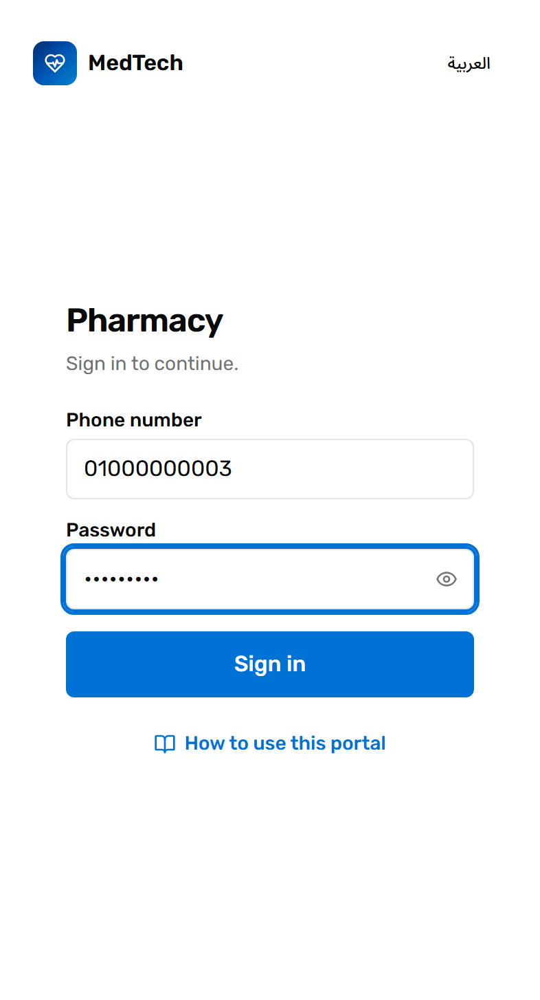
- 1Phone number — the branch's phone number.
- 2Password — the branch's password.
- 3Tap the eye to show the password while you type it.
- 4Sign in opens the counter.
- 5Switch the screen between English and العربية at any time.
The portal keeps you signed in on this device. Use Sign out (in the settings menu, below) when you leave a shared device. How to use this portal, under the sign-in box, opens this guide.
The counter screen
Everything starts here. The counter screen shows the box for the patient's code and the list of doses waiting at your branch.
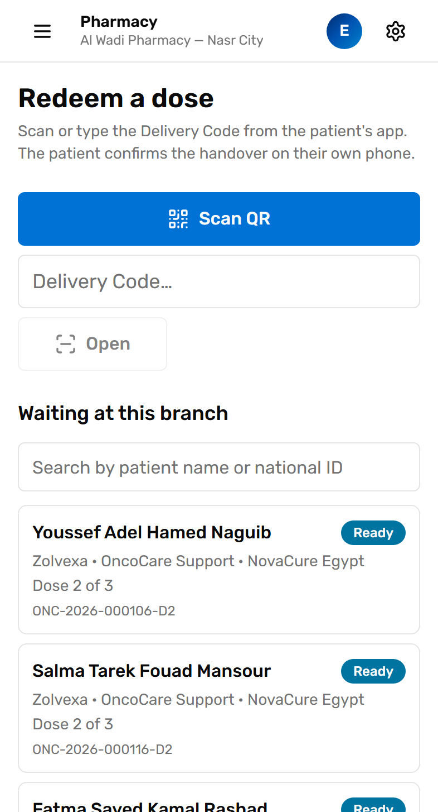
- 1Scan QR opens the camera to scan the QR code on the patient's phone.
- 2Or type the patient's Delivery Code here…
- 3…and tap Open.
- 4Waiting at this branch lists every dose assigned to your branch that is ready for collection.
- 5Search the list by patient name or national ID.
- 6Tap a patient to open their dose directly. Ready means it can be collected now.
- 7The menu opens the other pages of the portal.
The gear at the top opens the settings menu.
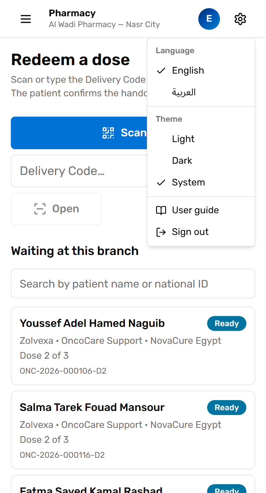
- 1Language — English or العربية.
- 2Theme — light or dark screen.
- 3Sign out — always sign out on a shared device.
User guide, just above Sign out, opens this guide in a new tab.
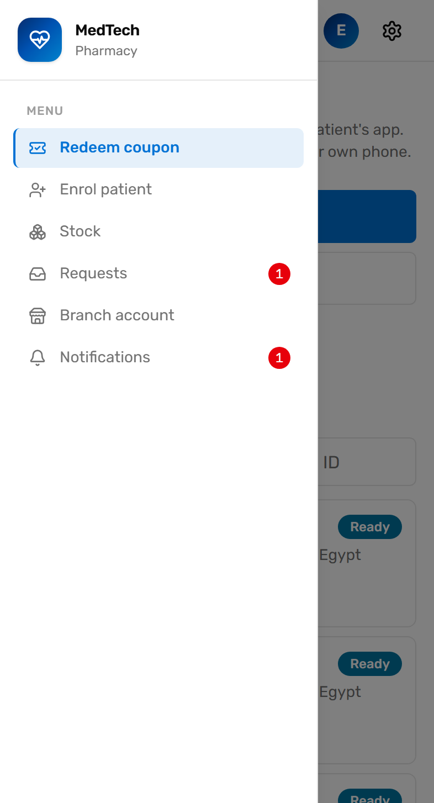
- 1Redeem coupon — the counter screen.
- 2Enrol patient — only shown if the programme allows your branch to enrol patients.
- 3Stock — the box serials your branch holds and has handed over.
- 4Requests — programme coordinators asking whether you have a medicine. The red dot counts the ones waiting for your reply.
- 5Branch account — who this sign-in is.
- 6Notifications — alerts about doses at your branch. A red dot counts the unread ones.
Hand over a dose, step by step
The whole handover happens on one screen, from top to bottom. Nothing is saved until the patient confirms on their phone, so if you stop half way nothing is recorded.
1. Open the dose and read it
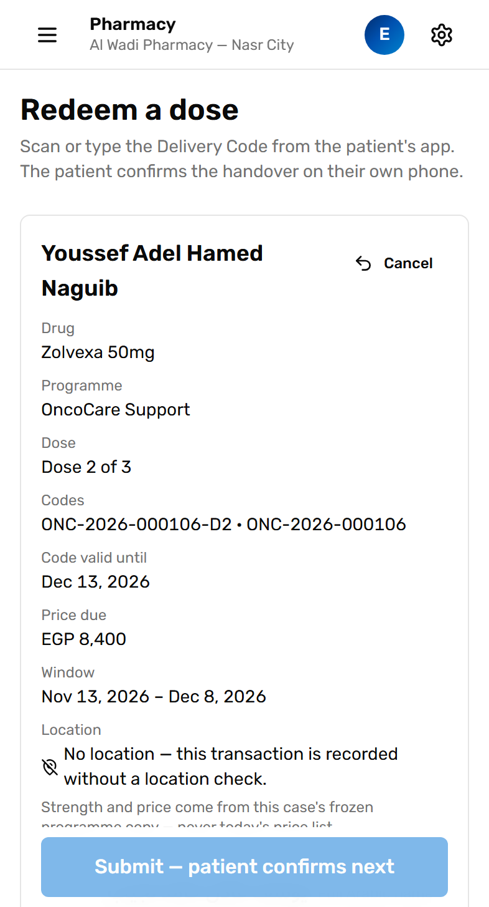
- 1The patient's name. Check it is the person in front of you.
- 2Drug — the medicine and strength to hand over.
- 3Dose — which dose this is (for example Dose 2 of 3).
- 4Code valid until — the last day this code can be used.
- 5Price due — the full price of the dose. The amount the patient pays is shown further down, after any discount.
- 6Cancel leaves without recording anything.
Below these you also see the codes, the collection Window (the dates this dose can be collected) and whether the visit's location was recorded.
2. Check the patient's identity
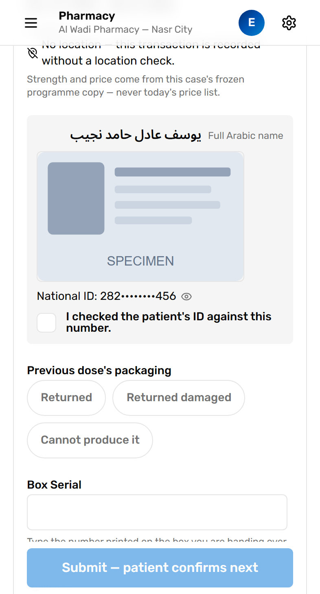
- 1The national ID number, partly hidden. Compare it with the ID card the patient hands you.
- 2Tap the eye to show the full number when you need it.
- 3Tick I checked the patient's ID against this number. You cannot continue without it.
The ID card picture the patient uploaded and their full Arabic name are shown above, to compare with the card.
3. Record the previous box (from the second dose)
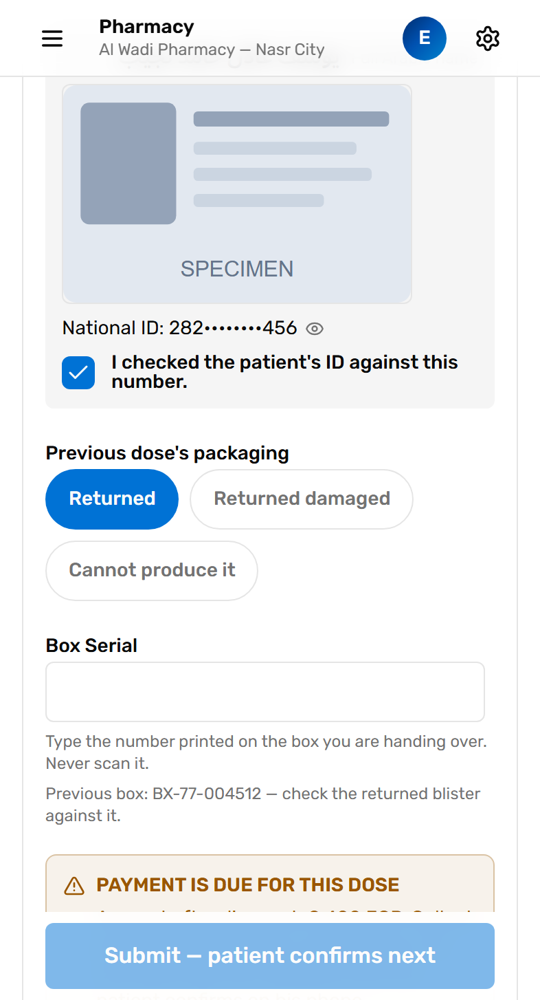
- 1Previous dose's packaging — choose what the patient brought back: Returned, Returned damaged, or Cannot produce it.
The previous box's serial is shown under the box serial field, so you can check the returned blister against it.
4. Enter the serial of the box you hand over
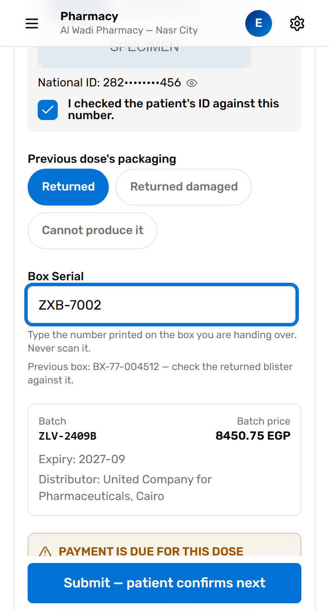
- 1Box Serial — type the number printed on the box you are handing over. Type it; never scan it.
- 2The batch appears: batch number, batch price, expiry and distributor. Check they match the box.
Some programmes keep a list of the serials your branch holds. Then you pick the box from Box Serial (choose from this branch's list) instead of typing; if the box is missing from the list, use The box isn't in the list? Type its serial instead.
Some programmes do not track box serials at all. Then there is no Box Serial field:
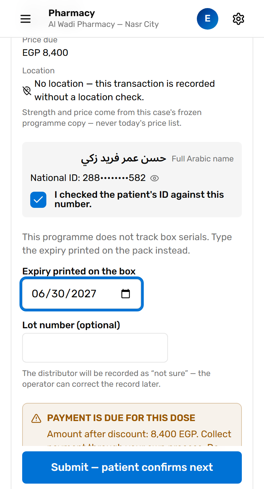
- 1This programme does not track box serials. — so you record the pack instead.
- 2Expiry printed on the box — type the expiry date from the pack.
- 3Lot number (optional) — the lot or batch number on the pack, if you can read it.
- 4The distributor is recorded as "not sure"; the programme team can correct it later.
5. Read the payment message, then submit
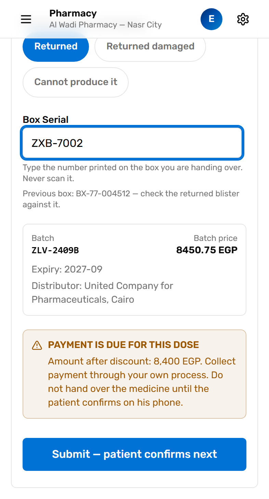
- 1The payment message tells you exactly what to do about money for this dose.
- 2Submit — patient confirms next sends the handover to the patient's phone.
The message is always one of these:
| Message | What you do |
|---|---|
| PAYMENT IS DUE FOR THIS DOSE | Collect the amount shown (after discount) through your usual process. |
| PAYMENT WILL BE MADE THROUGH THE APP | Do not collect any money. The patient pays in the app. |
| THIS IS A FREE DOSE — NO PAYMENT DUE | Collect nothing. |
In every case, do not hand over the medicine until the patient has confirmed on their phone.
6. Wait for the patient to confirm
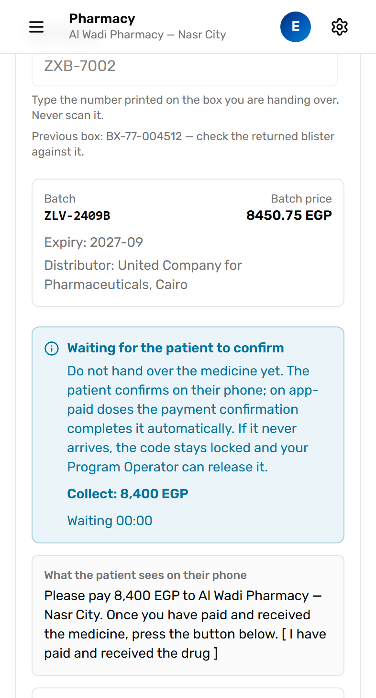
- 1Waiting for the patient to confirm — do not hand over the medicine yet.
- 2The amount to collect, if this dose is paid at the counter.
- 3What the patient sees on their phone — show this to the patient if they cannot find the button.
The patient presses the button in their app. For doses paid in the app, the payment completes the confirmation on its own. Tap Check now to refresh.
You do not have to wait on this screen: Back to worklist lets you serve the next patient. The code stays locked and waits in the list as Waiting for patient — open it again from there. If the confirmation never arrives, your Program Operator can release the code.
7. Damage the box and hand it over
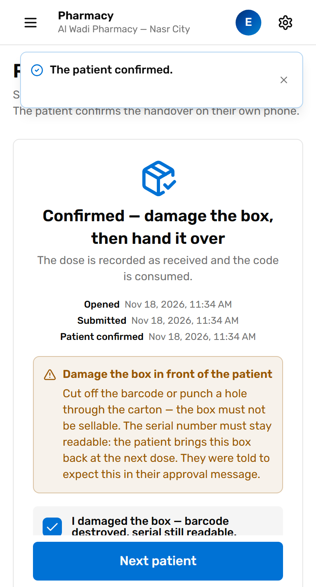
- 1Confirmed — damage the box, then hand it over. The dose is recorded as received.
- 2The record of the handover: when it was opened, submitted and confirmed.
- 3In front of the patient, cut off the barcode or punch a hole through the carton, so the box cannot be sold again — then tick I damaged the box — barcode destroyed, serial still readable. Keep the serial readable: until the last dose, the patient brings this box back next time.
- 4Next patient returns to the counter.
On a programme that does not track box serials, there is no serial to keep: the tick reads I damaged the box — barcode destroyed.
When the code does not open
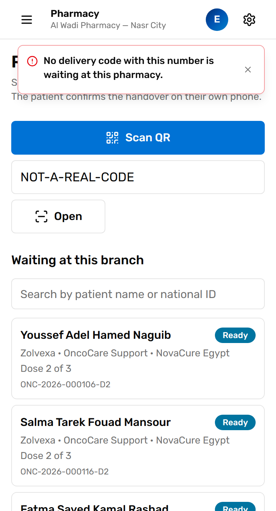
- 1The reason the code did not open.
- 2Check the code you typed against the patient's phone.
| You see | What it means |
|---|---|
| No delivery code with this number is waiting at this pharmacy. | The code is mistyped, or the dose is not assigned to your branch. Check it with the patient. |
| This delivery code is not collectable at this pharmacy branch. | The dose belongs to another branch. |
| This dose was already handed over. | It has been collected. Nothing more to do. |
| This delivery code has expired or was cancelled. | The patient must contact the programme; only the coordinator can reissue it. |
| This dose is not collectable yet | Its collection window has not opened. Tell the patient the date shown. |
| Submit did not go through. Try again. | The connection dropped. Try again; nothing was recorded. |
Stock and box serials
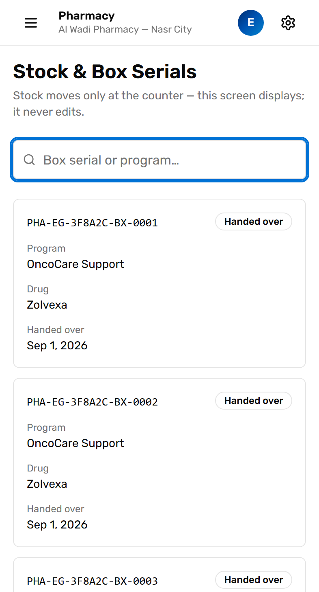
- 1Stock & Box Serials — the boxes your branch holds for programme patients, and the ones it handed over.
- 2Search by box serial or programme.
This page only shows; it never changes stock. Stock moves when you hand over a dose at the counter.
Availability requests
On some programmes, the programme coordinator asks pharmacies whether they have a medicine before choosing one for a patient. These questions arrive under Requests.
A request is only a question. You never see who the patient is, and confirming does not send the patient to you. If the coordinator — or the patient — then chooses your branch, the dose appears in Waiting at this branch as usual.
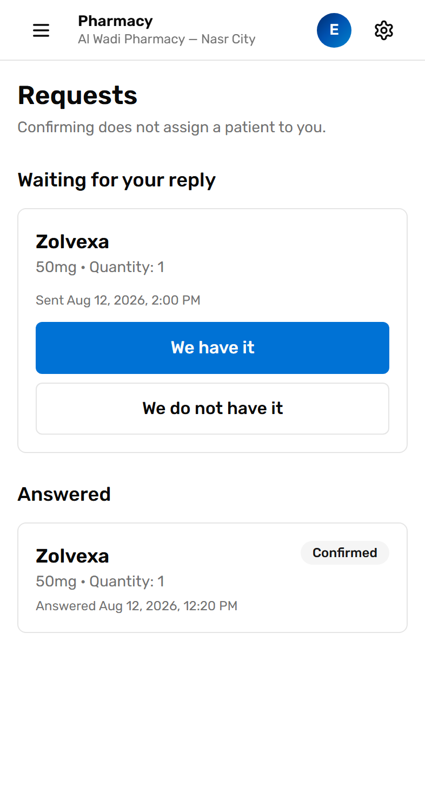
- 1Confirming does not assign a patient to you.
- 2Waiting for your reply — each request shows the medicine, its strength, the quantity and when it was sent.
- 3We have it — confirm that your branch can supply it.
- 4We do not have it — refuse, with a reason.
- 5Answered — your earlier replies, with their state.
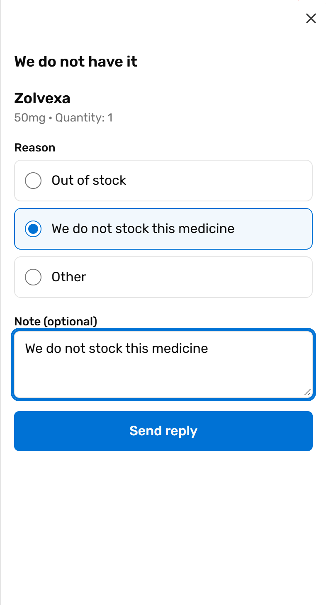
- 1Reason — Out of stock, We do not stock this medicine, or Other.
- 2Note (optional) — anything the coordinator should know.
- 3Send reply.
Branch account
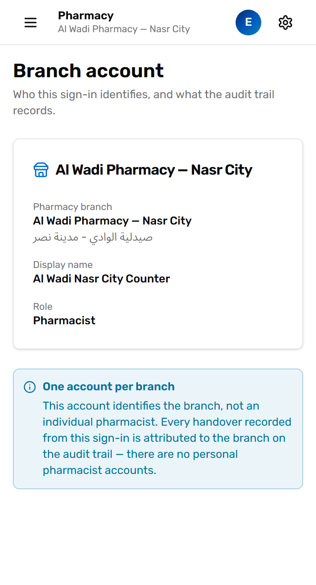
- 1Branch account — the branch, the display name and the role of this sign-in.
- 2One account per branch. Every handover made with this sign-in is recorded against the branch, not against one pharmacist.
Notifications
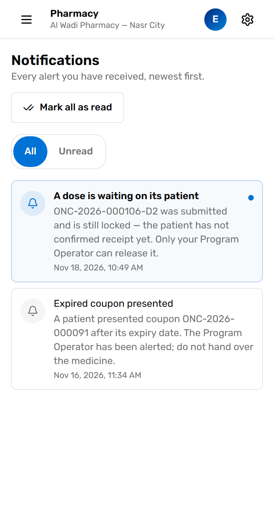
- 1Mark all as read clears the unread dots. Use All and Unread to filter.
You are told, for example, when a dose is waiting on its patient or when a patient presents an expired code.
Enrol a new patient
Only if the programme lets your branch enrol patients does Enrol patient appear in the menu. You enter who the patient is; the patient then finishes in their app and the programme coordinator completes the enrolment form.
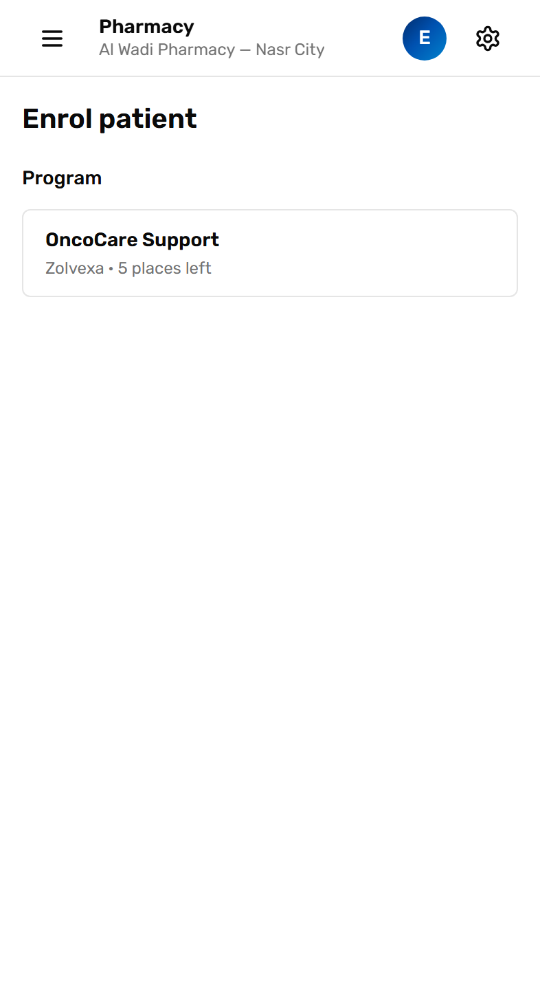
- 1Pick the programme. places left is how many more patients your branch can enrol on it.
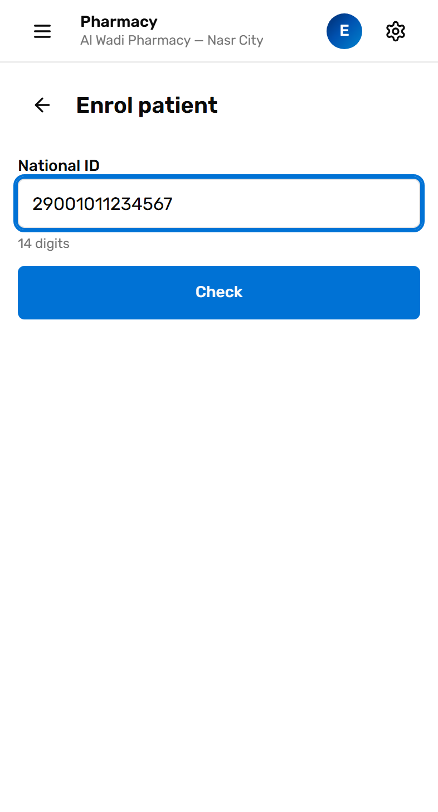
- 1National ID — the 14 digits on the patient's card.
- 2Check looks the patient up.
If the patient is new to MedTech:
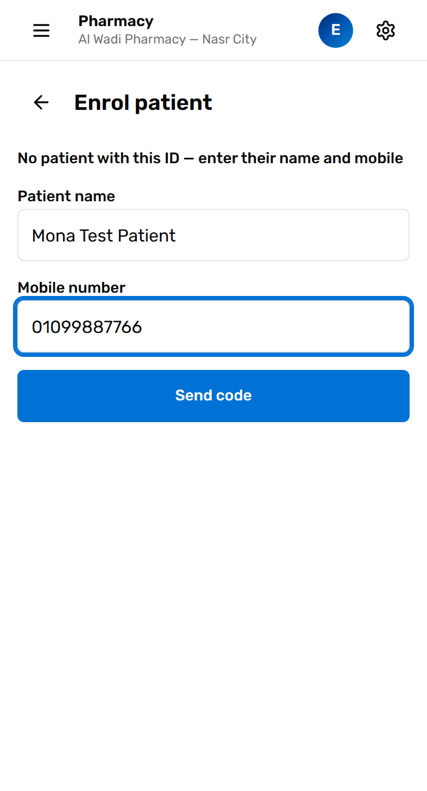
- 1No patient with this ID — so you enter their details.
- 2Patient name — as on the ID card.
- 3Mobile number — the patient's own mobile; the code goes to it.
- 4Send code texts a confirmation code to that mobile.
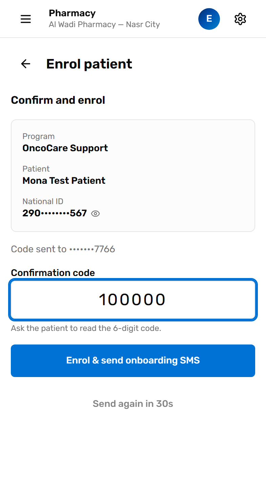
- 1Confirm and enrol — check the programme, name and ID once more.
- 2Shows which number the code went to. If it does not arrive, send it again after the countdown.
- 3Confirmation code — ask the patient to read you the 6-digit code.
- 4Enrol & send onboarding SMS enrols the patient and texts them how to continue in the app.
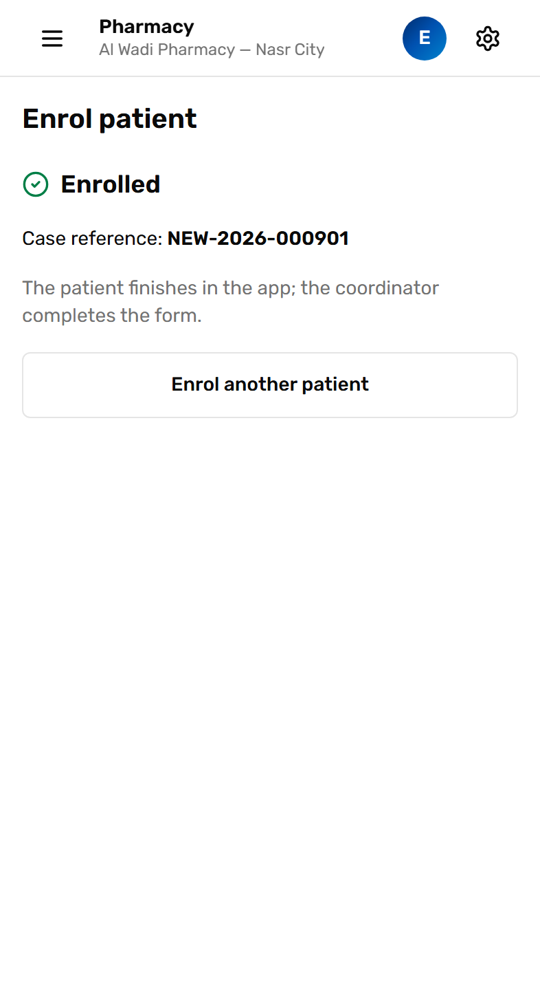
- 1Enrolled — the case reference is shown under it.
- 2The patient finishes in the app; the coordinator completes the form. Use Enrol another patient for the next one.
If the patient is already known to MedTech, you only confirm it is them:
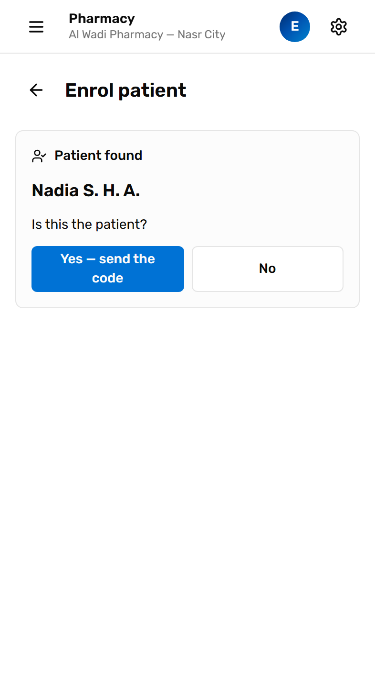
- 1Patient found.
- 2Is this the patient? The name is shortened on purpose — compare it with the card.
- 3Yes — send the code sends the confirmation code to the patient's registered mobile. Then continue as above.
Quick answers
Can I hand over before the patient confirms? No. Always wait for Confirmed — damage the box, then hand it over.
The patient's phone is dead. The patient must confirm on their own phone. Ask them to come back once it is charged; the dose stays waiting.
I opened the wrong patient. Tap Cancel. Nothing is recorded until you submit.
I submitted but the patient left. The code stays locked as Waiting for patient. Your Program Operator can release it.
Who sees what I did? Every handover is recorded against your branch with the time it was opened, submitted and confirmed.